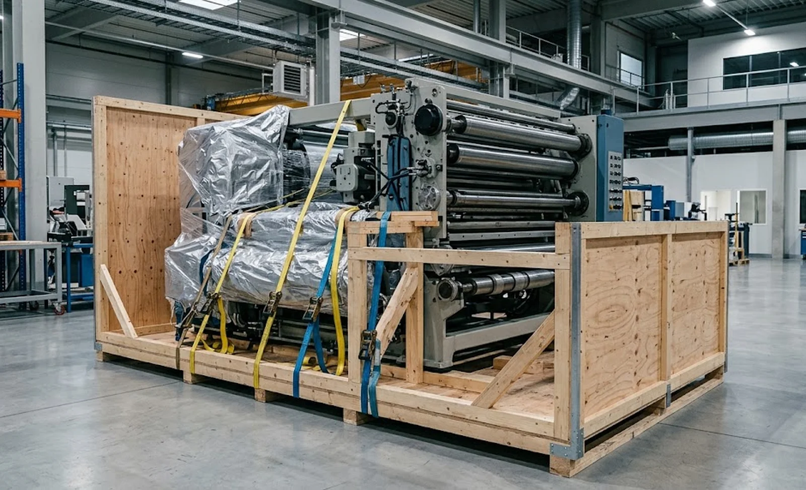
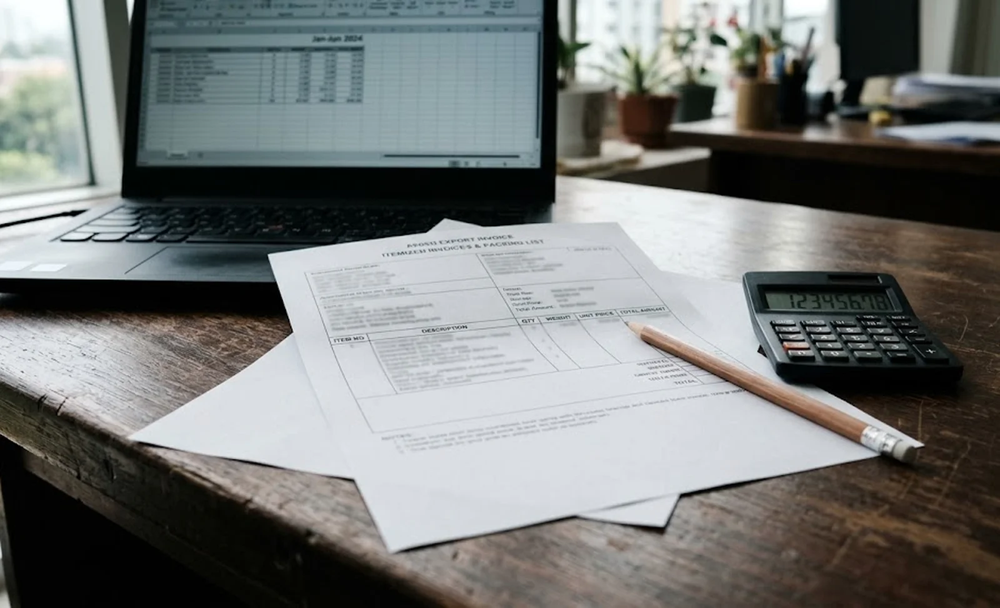

Published November 2, 2026 | By HDPTH Technical Editorial Team

Buyers comparing slitter rewinder quotations from suppliers in different countries routinely compare the ex-works or CIF price and stop there. Yet two identical machines can land at noticeably different total costs depending on how they are classified, what origin paperwork accompanies them and how the deal terms allocate import responsibilities. Customs is not a footnote to the purchase — it is a line item large enough to change which supplier wins.
Why customs classification belongs in the buying decision
The Harmonized System gives every traded product a code, and that code drives four consequences at once: the duty rate, the tax treatment, the regulatory checks that may apply, and the statistics your import history accumulates under. For converting machinery the duty rates in most developed markets are modest, so buyers sometimes treat classification as the broker’s problem. That is short-sighted for three reasons. First, import VAT or GST is calculated on the declared value plus freight and duty — frequently the single largest payment you make before the machine is released. Second, a code declared by habit or guesswork that a customs authority later disagrees with means re-classification, back-duty and, in some jurisdictions, penalties. Third, the code follows the machine for its whole import life: spares, retrofits and any second machine will be measured against the same precedent.
Which HS code family your machine falls into
There is no universal “slitter rewinder” heading. Classification follows the machine’s construction and the material it is built to process, and three families cover most converting equipment:
- Heading 8441 — paper and paperboard machinery: machines for making up paper or paperboard, including cutting machines. Paper, board and labelstock slitter rewinders typically land here.
- Heading 8477 — machinery for working rubber or plastics: film and flexible-plastic slitter rewinders are generally classified in this heading, most often in the “other machinery” subheading.
- Heading 8449 — textile machinery: machinery for reeling, unreeling, preparing or processing textile yarns and fabrics — the family that typically covers nonwoven converting and rewinding equipment.
Because a machine may combine functions — for example a line that slits nonwoven, embosses and rewinds — the decisive question is which function gives the machine its essential character. That is a judgement call made by the customs authority of the destination country against the national tariff, which refines the international six-digit code to ten digits with its own duty rate. The practical takeaway for a buyer: do not accept a code from memory or from a forum. Hand the supplier’s technical specification sheet to a licensed broker in your market and get the classification, and its duty rate, confirmed in writing before the contract is signed.
How duty is actually calculated: valuation, origin and the charges beyond duty
Duty is a percentage of customs value, and customs value is not simply the price on the invoice. Most countries assess value on a transaction basis — the price actually paid, with additions such as international freight, insurance and, in some jurisdictions, royalties or tooling paid separately. Two habits cause trouble. Under-invoicing to save duty is illegal and easily detected against comparable imports; never accept a supplier who offers it. And lump-sum invoices that merge the machine, tooling, spare parts and freight into one figure invite the customs authority to re-value the shipment. Ask for an itemised commercial invoice instead: machine, tooling, spare parts and transport each on their own line, because each line is classified — and priced — separately at entry.
Origin is the second lever. If a preferential trade agreement applies between the exporting and importing countries, a certificate of origin presented at entry can cut the duty to zero or near it. Ask the supplier early whether they can issue the relevant certificate — it is a routine document for an established exporter, but it needs to be requested, not assumed. Beyond duty and VAT, budget for the service costs of clearance itself: broker fees, port and terminal handling, examination or scanning charges when customs calls for one, inland trucking for an oversized load, and — the classic budget-killer — demurrage and detention when documents are not ready when the vessel arrives.
Documents your broker will need from the supplier
Customs clearance is a paperwork exercise, and every missing item is measured in days of port storage. Before shipment, make sure your broker will receive:
- Commercial invoice and packing list: itemised, with gross and net weights, crate dimensions and the machine’s model designation matching the contract.
- Bill of lading or air waybill: consignee details exactly as your customs registration requires.
- Certificate of origin: the ordinary chamber-of-stamp version, plus the preferential form if a trade agreement is being claimed.
- Technical specification sheet: machine function, materials processed, weight and dimensions — the evidence that supports the classification you declared.
- ISPM-15 fumigation mark on the export crate: wooden packaging without it is a routine reason for holds and treatment orders.
- Compliance documentation: the CE declaration and technical file or local equivalent, which regulators — not customs — may ask to see after release.
| Cost element | What drives it | Buyer action |
|---|---|---|
| Import duty | Tariff code, declared customs value, origin and trade agreements | Get written classification from your broker; request preferential certificate of origin |
| Import VAT / GST | Declared value plus freight, insurance and duty | Register as importer early; treat it as a cash-flow item even if recoverable |
| Broker and port fees | Entry complexity, examinations, terminal tariffs | Ask the broker for a fixed quote per entry, not per hour |
| Inland transport | Machine weight, width and site access | Scope heavy-haulage in parallel with rigging planning |
| Demurrage and detention | Documents late or incomplete at arrival | Send the full document set before the vessel sails |
Budgeting total landed cost into the machine decision
Total landed cost is the quoted price plus everything the border adds: duty, VAT, broker and port fees, inland transport and the financial cost of the weeks the money sits at customs. For converting machinery in most major markets that adder is a manageable single-digit percentage of the machine price — provided the classification and documents are right. What turns it into a real budget risk is not the tariff table but avoidable friction: a lump-sum invoice, a missing origin certificate, an unregistered importer or a crate without the ISPM-15 mark. A buyer who spends two hours with a broker before signing typically spends nothing extra at the border; a buyer who discovers classification problems on arrival pays storage charges while learning them.

Landed cost also connects to the commercial terms you negotiate. Duty, VAT and clearance obligations move between seller and buyer depending on the delivery term agreed, which is why it pays to review our Incoterms and shipping guide alongside this one — the delivery term decides who stands in front of customs. Payment structure matters for the same reason, and our payment terms and trade finance guide covers how to align money flow with shipment milestones. If you are still shortlisting machine configurations while budgeting landed cost, our high-speed slitting machines page shows the range these import-planning numbers apply to.
Planning the full import budget?
Send HDPTH your destination country and project scope. We will supply the itemised invoice structure, specification sheet and origin documentation your broker needs for clean classification and clearance — before the deposit, not after the container sails.
Submit Your Project InquiryFrequently asked questions
What HS code applies to a slitter rewinder?
There is no single code for every slitter rewinder — classification follows the machine’s construction and the material it processes. Machines for paper and paperboard generally fall under heading 8441, machines for working rubber or plastics under heading 8477, and machinery for reeling or preparing textile fabrics and nonwovens under heading 8449. The national tariff of the destination country sets the final ten-digit code and duty rate, so ask your customs broker to confirm the classification in writing before the machine ships, using the technical specification sheet.
Do I pay duty on spare parts and tooling as well as the machine?
Yes — each line on the commercial invoice is classified separately. Spare knives, rewind shafts, air chucks and other parts are usually classified under the parts subheading of the relevant machinery heading, which can carry a different duty rate from the complete machine. Declare tooling, commissioning spares and documentation on their own lines with realistic values rather than bundling everything into one figure, because a customs authority that cannot verify a lump-sum invoice can re-value it and delay clearance.
How can I reduce import duty legally on a converting machine?
The legal levers are classification, origin and valuation — never under-invoicing. First, confirm the correct code; converting machinery is often charged at zero to a few percent in major markets, and some codes are duty-free under trade agreements. Second, ask the supplier for a certificate of origin so preferential agreements such as RCEP or an applicable bilateral FTA can be claimed at entry. Third, check whether your country’s tariff suspensions or temporary exemptions cover the equipment. A licensed broker in your market can review all three before the deposit is paid.
Who is the importer of record, and does DDP remove my import obligations?
The importer of record is the party legally responsible for declaring the goods, paying duty and tax, and answering customs queries. With DAP terms that is you, and you will need a customs broker and, in some markets, a customs bond. With DDP terms the seller nominally carries those obligations, but the machine is still imported under your address and consumption patterns, and DDP quotes often hide the broker and duty costs inside the price. Understand which party appears as importer of record before you sign — the trade-terms choice is an import-cost decision, not just a shipping detail.
What is the most commonly underestimated import cost?
Import VAT or GST. It is often the single largest cash outlay at entry — larger than the duty itself in most markets — and while registered businesses usually recover it, the full amount is paid to customs before the machine is released. The second most common surprise is port storage: demurrage and detention charges accumulate quickly when documents are incomplete or an examination is called, so budget clearance time realistically and make sure your broker receives the document set before the vessel arrives.
Sources
- World Customs Organization: what is the Harmonized System
- United States International Trade Commission: Harmonized Tariff Schedule (HTS)
- European Commission: TARIC integrated tariff database
- WTO: Information Technology Agreement and tariff elimination commitments
- ICC: Incoterms 2020 rules — delivery-term responsibilities between seller and buyer